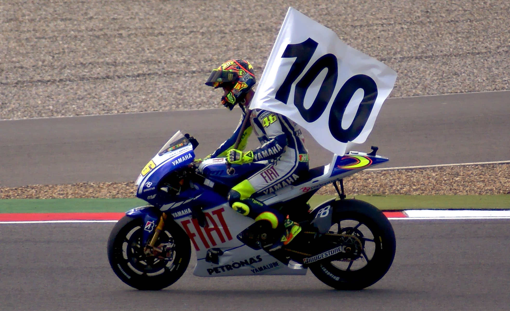

Valentino Rossi ocupa um lugar singular no esporte mundial. Ele não foi apenas um campeão dominante durante a formação da era moderna da MotoGP. Ele também se tornou um personagem central da categoria, combinando resultados, longevidade, rivalidades intensas, identidade visual e uma conexão incomum com o público.
Conhecido como “The Doctor”, Rossi ajudou a criar uma identidade reconhecida em diferentes países. O amarelo fluorescente, os capacetes personalizados, as comemorações elaboradas e o número 46 tornaram-se inseparáveis de sua imagem. Ao mesmo tempo, seu desempenho nas pistas sustentou toda essa popularidade: o italiano venceu em diferentes categorias, regulamentos, gerações de motos e fabricantes.
Quem é Valentino Rossi
eLE nasceu em 16 de fevereiro de 1979, em Urbino, na Itália. Filho de Graziano Rossi, que também disputou o Mundial de Motovelocidade, cresceu em um ambiente diretamente ligado às corridas e iniciou sua trajetória internacional ainda jovem.
A estreia no campeonato mundial aconteceu em 1996, na categoria 125cc. Naquele mesmo ano, Rossi conquistou a primeira vitória de sua carreira no Grande Prêmio da República Tcheca, em Brno, disputado em 18 de agosto. A prova marcou o início de uma coleção que chegaria a 115 triunfos.
O primeiro título veio na temporada seguinte. Em 1997, Rossi foi campeão mundial da 125cc. Depois, subiu para a 250cc, terminou o campeonato de 1998 na segunda colocação e levantou a taça em 1999. A passagem pelas categorias menores revelou uma característica que acompanharia toda a sua carreira: a capacidade de adaptar a pilotagem às exigências de motos diferentes.
Os nove campeonatos mundiais:
- 1997 — campeão da 125cc
- 1999 — campeão da 250cc
- 2001 — campeão da 500cc
- 2002 — campeão da MotoGP
- 2003 — campeão da MotoGP
- 2004 — campeão da MotoGP
- 2005 — campeão da MotoGP
- 2008 — campeão da MotoGP
- 2009 — campeão da MotoGP
A sequência fez dele o único piloto da história a conquistar títulos mundiais nas categorias 125cc, 250cc, 500cc e MotoGP. Ele também venceu o último campeonato da antiga classe das 500cc, em 2001, e o primeiro da MotoGP, em 2002, depois da mudança de identidade técnica e comercial da categoria principal.
O início nas categorias menores ao domínio na principal
Rossi chegou à principal categoria do Mundial em 2000. Depois de terminar a temporada de estreia como vice-campeão, conquistou o título das 500cc em 2001. A vitória confirmou que o talento demonstrado nas divisões menores também seria suficiente para colocá-lo no topo entre os principais pilotos do planeta.
A transição para a MotoGP não reduziu seu domínio. Rossi foi campeão em 2002 e 2003 com a Honda, completando três títulos consecutivos da categoria. Nesse período, tornou-se a referência esportiva e consolidou uma imagem que já ultrapassava os limites tradicionais do motociclismo.
O que parecia uma relação destinada a continuar por muitos anos mudou no fim de 2003. Mesmo no auge, Rossi decidiu deixar a Honda e assumir o desafio de correr pela Yamaha. A escolha tornou-se um dos pontos mais importantes de sua carreira.
A histórica mudança de equipes
Rossi estreou com a Yamaha no Grande Prêmio da África do Sul de 2004. Em sua primeira corrida com a nova equipe, venceu em Welkom e iniciou uma temporada que terminaria com o título mundial.
O impacto da mudança foi imediato. Havia vencido sua última prova de 2003 com a Honda e ganhou a abertura de 2004 com a Yamaha. Mais do que uma troca de equipe, o movimento mostrou que seu sucesso não dependia exclusivamente da moto utilizada nas temporadas anteriores.
O italiano voltou a ser campeão em 2005, completando uma série de cinco títulos consecutivos na categoria entre 2001 e 2005. Depois dos campeonatos conquistados com a Honda em 2001, 2002 e 2003, levantou as taças de 2004 e 2005 com a Yamaha.
Após perder os campeonatos de 2006 e 2007, o piloto retornou ao topo em 2008. No ano seguinte, defendeu o título e chegou ao nono campeonato mundial da carreira. Pela Yamaha, foram quatro conquistas da MotoGP: 2004, 2005, 2008 e 2009. A fabricante registra ainda 56 vitórias de Rossi durante a longa parceria construída na categoria.
A disputa pelo décimo título
Depois da temporada de 2010, Rossi deixou a Yamaha e passou a defender a Ducati em 2011 e 2012. A parceria entre o principal piloto italiano de sua geração e uma fabricante italiana tradicional criou grande expectativa, mas não produziu o mesmo nível de resultados alcançado anteriormente com Honda e Yamaha.
Em 2013, Rossi retornou à Yamaha. Naquele ano, voltou a vencer ao triunfar em Assen, encerrando um período de quase três anos sem subir ao lugar mais alto do pódio. A recuperação também mostrou que sua carreira ainda teria capítulos competitivos importantes.
O italiano terminou o Mundial como vice-campeão em três temporadas consecutivas: 2014, 2015 e 2016. O campeonato de 2015 foi especialmente marcante porque Rossi chegou à última etapa disputando seu décimo título mundial, mas Jorge Lorenzo terminou a temporada como campeão.
Aquela campanha comprovou a longevidade do número 46. Aos 36 anos, quase duas décadas depois de sua estreia no Mundial, Rossi continuava capaz de disputar um campeonato contra pilotos de outra geração e em um cenário técnico muito diferente daquele encontrado no começo da carreira.
As grandes rivalidades da carreira
A trajetória também foi marcada pelos adversários que encontrou. Max Biaggi, Sete Gibernau, Casey Stoner, Jorge Lorenzo e Marc Márquez representam diferentes fases de sua carreira.
Biaggi foi o principal rival italiano de Rossi no início da passagem pela categoria principal. Gibernau tornou-se um adversário direto durante o período de domínio do número 46. Stoner comandou a reação da Ducati e foi campeão em 2007. Lorenzo, companheiro de equipe na Yamaha, venceu campeonatos enfrentando Rossi com equipamentos semelhantes. Márquez surgiu mais tarde como a grande referência da geração seguinte.
Essas disputas ajudaram a transformar temporadas e Grandes Prêmios em histórias acompanhadas para além do resultado final. Em vários momentos, a rivalidade envolveu ultrapassagens, contatos, declarações públicas, diferenças de estilo e batalhas diretas pelo campeonato.
Os números oficiais ajudam a dimensionar a carreira do italiano:
- 9 títulos mundiais em todas as categorias
- 7 títulos na classe principal
- 26 temporadas no Mundial
- 432 corridas disputadas
- 115 vitórias
- 235 pódios
- 65 poles
- 89 vitórias na categoria principal
- 199 pódios na categoria principal
Rossi terminou no pódio em 199 das 372 corridas que disputou na classe principal. As 89 vitórias nesse nível representam a maior parte de seus 115 triunfos no Mundial. A combinação de títulos, volume de corridas e presença constante entre os primeiros colocados ajuda a explicar por que sua trajetória não pode ser resumida apenas aos anos de domínio absoluto.
O significado do número 46
Rossi explicou que o número veio principalmente de seu pai, Graziano Rossi, que também foi piloto e competiu com o 46. O italiano também contou que admirava um piloto japonês que participou como convidado de uma corrida em Suzuka usando esse mesmo número.
Mesmo depois de conquistar campeonatos, não adotou o número 1 reservado ao campeão vigente. A decisão fortaleceu uma identidade própria e transformou o 46 em uma marca reconhecida dentro e fora das pistas.
O número aparecia nas motos, nos capacetes, nas roupas e nas arquibancadas. Para muitos torcedores, tornou-se uma forma direta de identificação com o piloto, independentemente da equipe ou do fabricante que ele representava.
Em 28 de maio de 2022, a MotoGP realizou em Mugello a cerimônia oficial de retirada do número 46. A homenagem aconteceu diante do público do Grande Prêmio da Itália e consolidou o numeral como parte da história oficial da categoria.
A aposentadoria
Rossi anunciou em 5 de agosto de 2021 que encerraria sua carreira na MotoGP ao fim daquela temporada. Sua última corrida aconteceu no Grande Prêmio da Comunidade Valenciana, em novembro, quando terminou na décima colocação.
A despedida encerrou uma trajetória iniciada 25 anos antes, mas não afastou seu nome do paddock. Rossi já havia construído uma estrutura própria para manter sua influência no motociclismo por meio da formação de pilotos e da presença de uma equipe no campeonato.
O legado
A VR46 Riders Academy foi criada como um projeto voltado ao desenvolvimento de jovens pilotos. A proposta é oferecer condições esportivas, profissionais e pessoais para que novos competidores avancem em suas carreiras.
A iniciativa ampliou o alcance da experiência acumulada por Rossi. Em vez de limitar seu legado às estatísticas individuais, o italiano passou a participar da preparação de uma nova geração de atletas.
A presença da marca VR46 também chegou à estrutura competitiva da MotoGP. Rossi aparece oficialmente como proprietário da equipe VR46 Racing Team, mantendo ligação direta com o campeonato mesmo depois de deixar o grid como piloto.
Essa continuidade ajuda a conectar a era comandada pelo número 46 ao cenário contemporâneo da modalidade.
Uma lenda do motociclismo
Valentino Rossi reúne critérios esportivos que sustentam sua posição entre os maiores pilotos da história: sucesso em quatro categorias e campeonatos conquistados com duas fabricantes na classe principal.
Poucos competidores das modalidades de velocidade alcançaram dimensão comparável. Assim como a trajetória de Lewis Hamilton na Fórmula 1 foi marcada por títulos, recordes e alcance mundial, Rossi transformou seus resultados e sua personalidade em uma identidade reconhecida muito além da MotoGP.
Sua importância, porém, não se limita aos troféus. Rossi atravessou diferentes eras técnicas, enfrentou várias gerações de adversários e permaneceu competitivo por mais de duas décadas. A carreira começou nas motos de 125cc, passou pela 250cc e pelas 500cc e avançou até uma MotoGP muito mais dependente de eletrônica, dados e desenvolvimento aerodinâmico.
Ao mesmo tempo, o italiano levou personalidade para o ambiente esportivo. As comemorações, os capacetes temáticos, o amarelo fluorescente e o número 46 criaram uma identidade própria sem substituir o desempenho. O personagem funcionou porque o piloto continuou vencendo, disputando títulos e acumulando recordes.
É por isso que o legado de Valentino Rossi permanece tão forte. O número 46 já não está nas mãos do piloto que transformava cada corrida em um evento, mas continua presente nas arquibancadas, na academia de formação, na equipe VR46 e na memória de uma geração que acompanhou “The Doctor” atravessar 26 temporadas e marcar definitivamente a história da MotoGP.